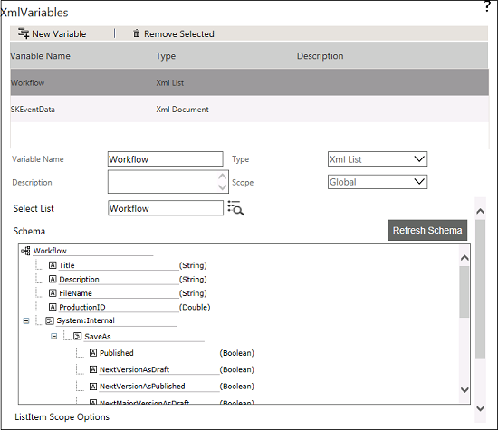

No
XML List Navigator Activity - XMLVariable of List Type
XML Variable of List type can be configured in the Start activity through the XML Variable property. XMLVariable of List typed can be mapped to any list schema i.e. either to lists provided out of the box or to lists created dynamically using create list option, to perform retrieval of data of a list item.
To get XMLVariable of List Type in the drop-down list, do the following steps:
- Log on to the Enterprise Console.
- Select Workflows from the Enterprise Console menu.
- Click New, and then click List to design a list workflow.
- Create the workflow.
- In the Process Designer, open Activity Properties of the Start activity.
- Click xmlVariables property to configure XML Variable of List type. The following screen appears.

- Click New Variable to create a XMLVariable of type XML List.
- Enter variable name in the Variable Name textbox.
- Select XML List from the Type drop-down list.
- Enter the List name or click the icon to select the list.
- Select Current option to work on current item which alerted the workflow or Select New option to add new item to the list.
- Click Save Variable to save the created XML variable of List type.
- Now Right-click on List Navigator activity and select the Activity Properties.
- The above created XML variables will be listed in the XMLVariable of List Type. Now you can select the required XML variable from the XMLVariable of List Type drop-down list.
Note: The XML List XML variable can have work on following scopes
Current - This scope allows you to fetch the current item which was alerted in the workflow.
New - This scope allows you to add new item to the list.
List Query - This scope allows you to fetch items as per the query.